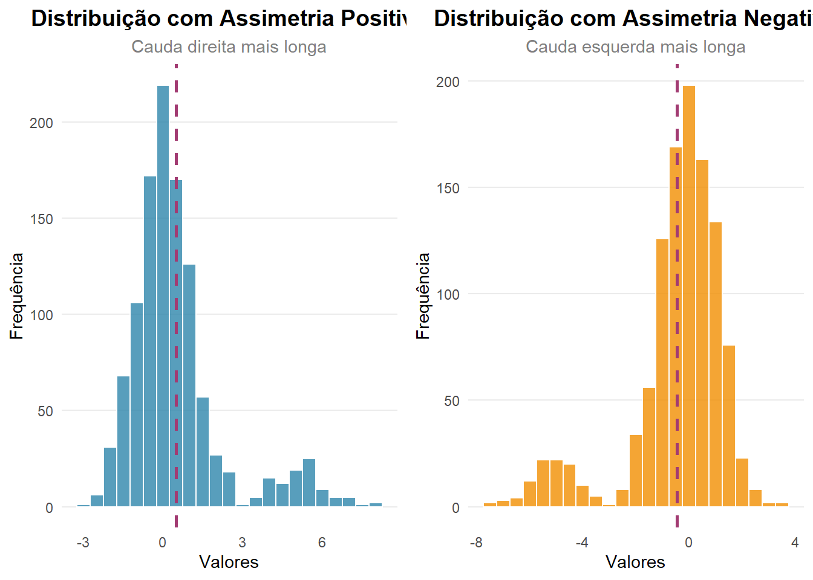
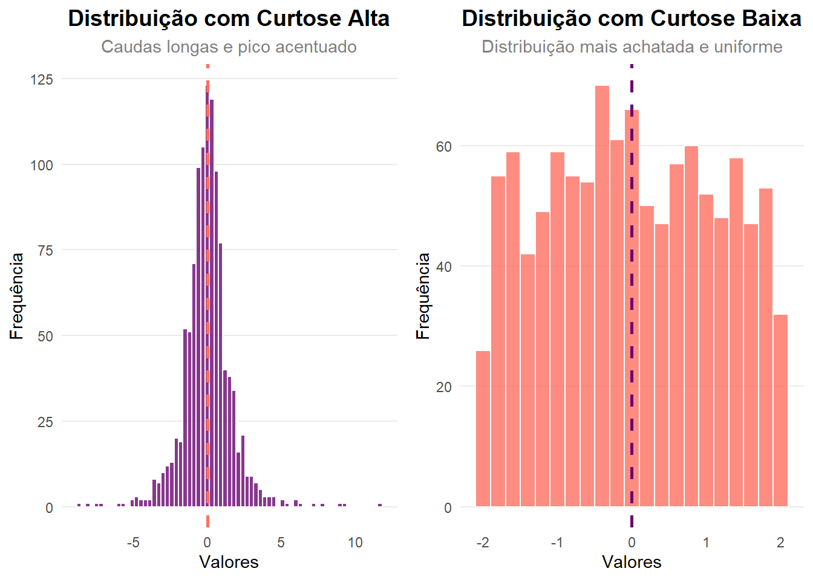

A econometria é uma disciplina que combina economia, estatística e matemática. Por isso, é importante ter alguns conhecimentos de base nestas áreas. Este capítulo apresenta alguns conhecimentos básicoss que serão úteis para compreender a econometria. Naturalmente, que é necessária uma análise mais profunda de cada um destes tópicos.
Conceitos Fundamentais de Estatística
Nesta secção vamos rever alguns conceitos de estatística e a fórmulação matemática. O que se pretende é estar familiarizado com as definições. As fórmulas poderão ser sempre consultadas quando necessário.
Estatística Descritiva
A estatística descritiva envolve um conjunto de indicadores que ajudam a resumir algumas características dos dados:
Medidas de tendência central
Média: A média aritmética é a soma de todos os valores dividida pelo número de observações.
\[
Média = \frac{1}{n} \sum_{i=1}^{n} x_i
\tag{1}\]
onde: \[n\] é o número de observações; \[x_i\] é o valor da i-ésima observação da variável \(x_i\)
A média é sensível a valores extremos (outliers), o que pode distorcer a percepção. A média é o 1º momento da distribuição.
Mediana: A mediana é o valor que separa a metade superior da metade inferior dos dados. Se o número de observações for ímpar, a mediana é o valor do meio. Se for par, é a média dos dois valores centrais.
A variância, por estar ao quadrado, dá um peso maior a valores extremos. A variância é o 2º momento da distribuição.
Medidas de forma
Assimetria (Skewness): A assimetria mede a simetria da distribuição dos dados em torno da média. Uma assimetria positiva indica que a cauda direita é mais longa ou gorda do que a cauda esquerda, enquanto uma assimetria negativa indica o contrário. A assimetria é calculada pela fórmula:
\[
Skewness = \frac{n}{(n-1)(n-2)} \sum_{i=1}^{n} \left(\frac{x_i - \bar{x}}{s}\right)^3
\tag{5}\] onde: \(s\) é o desvio-padrão dos valores de \(x_i\).
A skewness é o 3º momento da distribuição.
Exemplo de assimetria positiva e negativa:
Warning in geom_histogram(binwidth = 0.5, fill = "#2E86AB", alpha = 0.8, :
Ignoring unknown parameters: `size`
Warning: Using `size` aesthetic for lines was deprecated in ggplot2 3.4.0.
ℹ Please use `linewidth` instead.
Warning in geom_histogram(binwidth = 0.5, fill = "#F18F01", alpha = 0.8, :
Ignoring unknown parameters: `size`

Figure 1
Curtose (Kurtosis): A curtose mede a “altura” da distribuição dos dados. Uma curtose alta indica que os dados têm caudas mais longas e uma concentração maior em torno da média, enquanto uma curtose baixa indica caudas mais curtas e uma distribuição mais uniforme. A curtose é calculada pela fórmula:
\[
Kurtosis = \frac{n(n+1)}{(n-1)(n-2)(n-3)} \sum_{i=1}^{n} \left(\frac{x_i - \bar{x}}{s}\right)^4 - \frac{3(n-1)^2}{(n-2)(n-3)}
\tag{6}\] onde: \(s\) é o desvio-padrão dos valores de \(x_i\).
A curtose é o 4º momento da distribuição.
# Exemplo de curtose alta e baixaset.seed(123)# Criação de dados com diferentes níveis de curtosedata_high_kurtosis <-data.frame(value =rt(1100, df =3)) # Distribuição t com baixos graus de liberdade (caudas longas)data_low_kurtosis <-data.frame(value =runif(1100, min =-2, max =2)) # Distribuição uniforme (mais achatada)# Criar dados para demonstrar curtosep3 <-ggplot(data_high_kurtosis, aes(x = value)) +geom_histogram(binwidth =0.3, fill ="#6A0572", alpha =0.8, color ="white", size =0.2) +geom_vline(aes(xintercept =mean(value)), color ="#FF6F61", linetype ="dashed", size =1) +labs(title ="Distribuição com Curtose Alta",subtitle ="Caudas longas e pico acentuado",x ="Valores", y ="Frequência") +theme_minimal() +theme(plot.title =element_text(hjust =0.5, size =14, face ="bold"),plot.subtitle =element_text(hjust =0.5, size =11, color ="gray50"),axis.title =element_text(size =11),panel.grid.minor =element_blank(),panel.grid.major.x =element_blank())
Warning in geom_histogram(binwidth = 0.3, fill = "#6A0572", alpha = 0.8, :
Ignoring unknown parameters: `size`
p4 <-ggplot(data_low_kurtosis, aes(x = value)) +geom_histogram(binwidth =0.2, fill ="#FF6F61", alpha =0.8, color ="white", size =0.2) +geom_vline(aes(xintercept =mean(value)), color ="#6A0572", linetype ="dashed", size =1) +labs(title ="Distribuição com Curtose Baixa",subtitle ="Distribuição mais achatada e uniforme",x ="Valores", y ="Frequência") +theme_minimal() +theme(plot.title =element_text(hjust =0.5, size =14, face ="bold"),plot.subtitle =element_text(hjust =0.5, size =11, color ="gray50"),axis.title =element_text(size =11),panel.grid.minor =element_blank(),panel.grid.major.x =element_blank())
Warning in geom_histogram(binwidth = 0.2, fill = "#FF6F61", alpha = 0.8, :
Ignoring unknown parameters: `size`
# Combinar os gráficosgrid.arrange(p3, p4, ncol =2)

Figure 2
Probabilidade
Definição de probabilidade - A probabilidade é uma medida numérica da possibilidade de um acontecimento ocorrer, varia entre 0 (impossivel) e 1 (certo).
Eventos mutuamente exclusivos - Dois eventos são mutuamente exclusivos se não houver a possibilidade de ocorrerem ao mesmo tempo. Por exemplo, ao lançar um dado, os eventos “sair um 3” e “sair um 5” são mutuamente exclusivos.
Eventos independentes - Dois eventos são independentes se a ocorrência de um não afeta a probabilidade do outro ocorrer. Por exemplo, ao lançar dois dados, o resultado do primeiro dado não afeta o resultado do segundo dado.
Distribuições de probabilidade - Uma distribuição de probabilidade descreve como a probabilidade é distribuída entre os possíveis resultados de uma experiência aleatória. As distribuições podem ser discretas (por exemplo, distribuição binomial) ou contínuas (distribuição normal, distribuição t-Student, distribuição F e distribuição qui-quadrado são das mais importantes).
Teorema do limite central - O teorema do limite central diz-nos que: à medida que o tamanho da amostra aumenta, a distribuição da média da amostra aproxima-se de uma distribuição normal, independentemente da distribuição da população original.
Lei dos grandes números - A lei dos grandes números diz-nos que, à medida que o tamanho da amostra aumenta, a média da amostra aproxima-se da média da população. Por exemplo, no lançamento de uma moeda ao ar, à medida que o número de lançamentos aumenta, a proporção de caras aproxima-se de 0.5 e de coroas também.
Inferência Estatística
Testes de hipóteses: Envolve a formulação de uma hipótese (H0) nula e uma hipótese alternativa (H1). H0 pode ser rejeitada ou não com base nos dados da amostra.
Nível de significância estatística: O nível de significância (\(\alpha\)) é o limite máximo para rejeitar a hipótese nula. Os níveis mais comuns são 0.05, 0.01 e 0.10.
Valor de probabilidade (P-Value): O p-value é a probabilidade de observar a hipótese nula. Um P-Value de 0.03 indica que há uma probabilidade de 3% de a hipótese nula ser verdadeira. Se o p-value for menor que o nível de significância estatística (\(\alpha\)), rejeitamos a hipótese nula.
Erro tipo I e tipo II: O erro tipo I ocorre quando rejeitamos a hipótese nula verdadeira, enquanto o erro tipo II ocorre quando não rejeitamos a hipótese nula falsa. Uma hipótese nula verdadeira é quando o valor real é igual ao valor que foi formulado na hipótese nula enquanto que uma hipótese nula falsa é quando o valor real é diferente do valor que foi formulado na hipótese nula.
P-hacking: O p-hacking refere-se à manipulação dos dados ou da análise para obter resultados estatisticamente significativos. Pode incluir o enviesamento da seleção de variáveis ou da amostra e ainda a escolha de métodos que favorecem resultados desejados. O p-hacking pode levar a conclusões enganosas e comprometer a integridade da pesquisa.
Conceitos de Matemática
Álgebra Linear Básica
Embora não seja necessário um conhecimento profundo, alguns conceitos de álgebra linear são úteis para entender os cálculos das funções do R nos modelos econométricos.
Matrizes - Estruturas denúmeros organizados em linhas e colunas. As matrizes são usadas para representar e manipular dados em econometria.
Operações matriciais básicas - multiplicação, transposição e inversão de uma matriz.